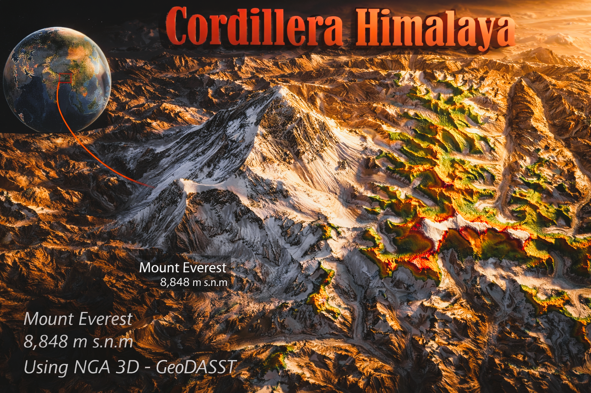

Blender 3D
Modelo de Elevación - Quimiag
Renderizado tridimensional del relieve de la parroquia Quimiag, integrando texturas satelitales y sombreado.
🔍 Ver en Alta ResoluciónColección completa de modelos tridimensionales topográficos y renders de alta resolución.
Volver a la página principal
Renderizado tridimensional del relieve de la parroquia Quimiag, integrando texturas satelitales y sombreado.
🔍 Ver en Alta Resolución
Renderizado tridimensional del relieve de la ciudad de Quito y sus alrededores, destacando la morfología del terreno.
🔍 Ver en Alta Resolución
Renderizado tridimensional del relieve de la ciudad de Cuenca y su entorno geográfico, resaltando la topografía de la zona.
🔍 Ver en Alta Resolución
Representación tridimensional de alta fidelidad del "Techo del Mundo", destacando la morfología glaciar y el relieve extremo del Himalaya.
🔍 Ver en Alta ResoluciónModelo de elevación en fase de procesamiento y renderizado.